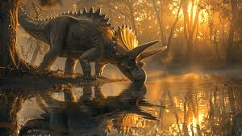
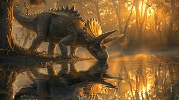

Triceratops był jednym z najbardziej charakterystycznych dinozaurów roślinożernych, żyjących na Ziemi pod koniec okresu kredowego, około 68-66 milionów lat temu. Jego nazwa, Triceratops, oznacza "dinozaur z trzema rogami", co odnosi się do trzech charakterystycznych rogów na jego głowie. Był to ogromny czworonożny dinozaur o masywnej budowie ciała, z potężnym tułowiem i krótkimi, silnymi kończynami.
 Triceratops osiągał długość około 7-9 metrów i wagę dochodzącą do 6-12 ton, co czyniło go jednym z największych ceratopsów i jednym z największych dinozaurów swego czasu. Jego charakterystyczną cechą były trzy duże rogi na czaszce: jeden na nosie i dwa nad oczami. Te rogi mogły być używane do obrony przed drapieżnikami lub w rywalizacji między samcami o partnerkę lub terytorium. Oprócz rogów, Triceratops miał też duży, tarczowaty grzebień na tylniej części głowy, który służył prawdopodobnie jako miejsce przyczepu mięśni.

Triceratops był roślinożercą i jego głównym pożywieniem były niskie rośliny, takie jak paprocie, paprocie nasienne i niskie krzewy. Jego szeroka szczęka była wyposażona w dziesiątki ostrzegawczych zębów, które pomagały mu w żuciu i rozdrabnianiu roślinnej materii. Jego potężne kończyny umożliwiały mu poruszanie się zarówno na terenach otwartych, jak i w lasach, co zapewniało mu dostęp do różnorodnego pokarmu.
Triceratops osiągał długość około 7-9 metrów i wagę dochodzącą do 6-12 ton, co czyniło go jednym z największych ceratopsów i jednym z największych dinozaurów swego czasu. Jego charakterystyczną cechą były trzy duże rogi na czaszce: jeden na nosie i dwa nad oczami. Te rogi mogły być używane do obrony przed drapieżnikami lub w rywalizacji między samcami o partnerkę lub terytorium. Oprócz rogów, Triceratops miał też duży, tarczowaty grzebień na tylniej części głowy, który służył prawdopodobnie jako miejsce przyczepu mięśni.

Triceratops był roślinożercą i jego głównym pożywieniem były niskie rośliny, takie jak paprocie, paprocie nasienne i niskie krzewy. Jego szeroka szczęka była wyposażona w dziesiątki ostrzegawczych zębów, które pomagały mu w żuciu i rozdrabnianiu roślinnej materii. Jego potężne kończyny umożliwiały mu poruszanie się zarówno na terenach otwartych, jak i w lasach, co zapewniało mu dostęp do różnorodnego pokarmu.

Adres: Zwoleń Radosna 26-700
Kontakt: nr. 797 715 111
email: jurrasicpark@gmail.com
Godziny otwarcia